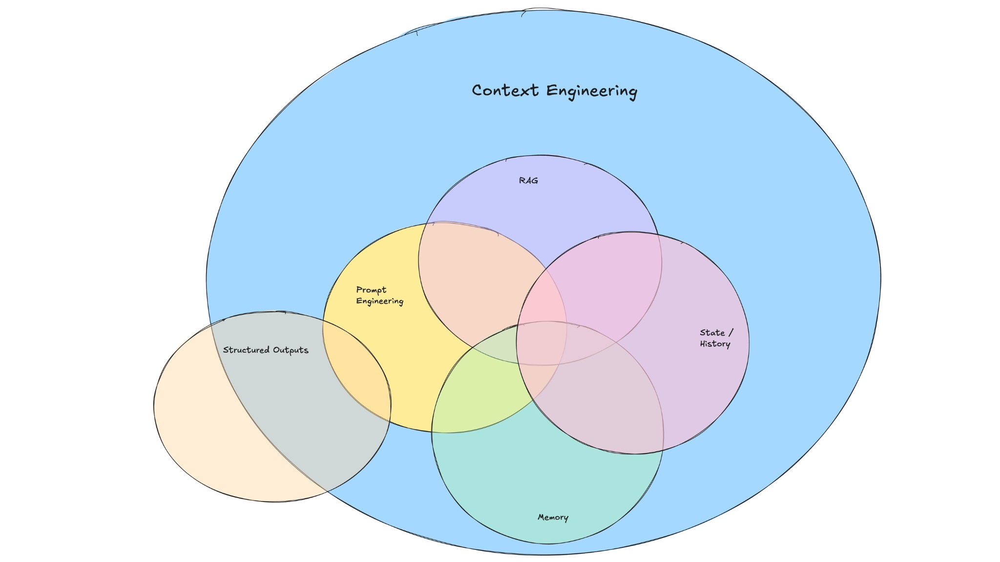

谈谈trouble-shooting的context-engineering
背景
我们期望用上下文工程去做辅助排障
- 给到SRE可能的排障方向
- 给到SRE深入排障所需要的context
定义
- context-engineering
@anthropic: Context engineering refers to the set of strategies for curating and maintaining the optimal set of tokens (information) during LLM inference, including all the other information that may land there outside of the prompts
@anthropic: llm推理过程中，管理和维护最佳的tokens(信息), 包括除了prompt以外可能出现的其他所有信息
- 具体的策略见下图

排障(ONCALL)过程的上下文
排障中涉及的TOOLS
tools是ai-agent体系的核心
你的排障的上下文质量取决于这些
ssh (第一步)
云原生场景
- kubectl
- docker
- helm
- …
linux系统(各种cli工具)
- netstat
- ss
- iostat
- lsof
- iftop
- strace
- tcpdump
- perf
- ebpf
- …
各种语言的profiling工具
这种一般需要SRE介入来分析了
- java: jmap
- java: jstack
- go: pprof
- python: py-spy等
资源或流程类的上下文
告警信息
告警信息可能包含多条
metrics及趋势
告警信息来源是metrics, 告警来了 我们都会去grafana 具体metrics的走势
事件： 变更事件
应用本身及关联方有没有变更
【CMDB】告警对象及关联环境和链路
这里主要指应用本身及其告警对象运行的环境，链路
从告警对象 下钻的话 有告警对象本身， 以及告警对象以来的中间件, 以及基础设施(操作系统, k8s, 云, 物理机)
基础设施还可以下钻到 各实体之间的网络连组件
【日志】
告警对象的日志
这里还要考虑，下钻过程我们所遇到的其他可疑组件的日志
深入看下能给到大模型哪些Context
组织tools和mcp的prompt
就是组织一下排障思路
tools使用
上面列举的tools的output都需要 就是那张图片的memory
RAG/MCP
我可以统一归纳为RAG 和 MCP
告警内容匹配
WHAT
历史告警处理
混沌演练的告警内容
如果有持续积累混沌演练场景, 那就非常好. 假设你的混沌演练覆盖了真实故障, 那是最快的
混沌演练其实很重要，但是有一套混沌演练体系比较难.
当你需要大量的异常场景数据做微调模型时显得尤为重要
HOW
这里就是期望有一些规范文档沉淀或者运维平台来沉淀这些信息
我们目前在处理告警时，有一套文档规范来落地告警处理的经验积累
metrics
WHAT
- grafana dashborad
- grafana prometheus metrics
HOW
通过mcp方式获取prometheus metrics
比较重要的是 不同时间周期的metics趋势
对于图片识别比较强的模型, 可以直接给到grafana渲染的趋势图
CMDB
WAHT
- k8s: pod, deployment, svc
- 物理机
- 虚机
HOW
这里和应用部署环境强相关如果是k8s 体系可以直接用 k8s-mcp
如果部署环境是企业内部的私有云, 可能需要自己开发一个mcp来获取cmdb信息
变更事件
WATH
- 变更事件, 什么时间， 变更哪些组件
HOW
这个是和自己的环境强相关的
我们目前管理的k8s服务基于gitops来管理发版,那我的上下文就是代码库本身, 很方便
链路和日志
WHAT
- 链路延迟
基于链路看到依赖链路的错误率或者延迟
错误日志
告警时间范围内的错误日志分析， 对比历史同期是否是有新增的， 错误日志量级同比增长
基于错误日志去下钻下一个组件
继续收集context
HOW
日志的话，如果有一个统一的收集，那基于这个组件找对应的MCP服务
链路的话, 我们使用skywalking，官方有一个对应的mcp
总结
我们理解了排障(ONCALL)所需要的上下文，后续就是组织这些上下文来做基于智能体的排障工具
下篇文章我们会说下我们的探索细节